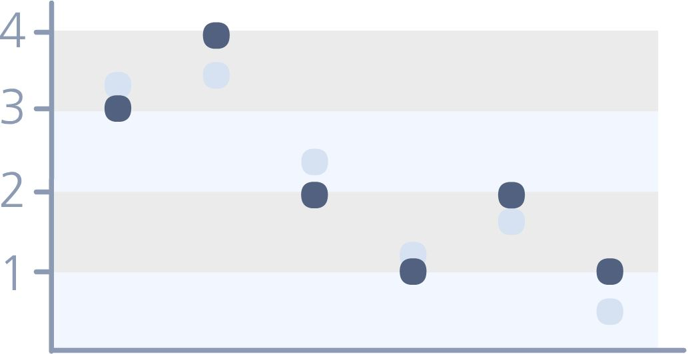
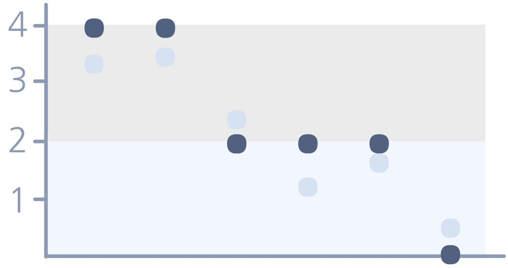

bild
auswahl bildausschnitt
In der vorhergehenden Phase wurden die Pixelwerte in einem Block mit Hilfe der DCT in einen Grundwert und in Abweichungen von diesem zerlegt. In der Quantisierung soll nun erreicht werden, dass nur Informationen übrig bleiben, die für das menschliche Auge besonders relevant sind.
Dieses Ziel wird dadurch erreicht, dass vor allem geringe Abweichungen ignoriert, das heißt entfernt werden und somit Speicherplatz eigespart wird. Wieviele Informationen verloren gehen, hängt von einem Qualitätsfaktor ab, den der Nutzer selbst festgelegt. Das Prinzip der Quantisierung soll in diesem Kapital erklärt werden.
Ausgangspunkt für die Quantisierung ist die DCT-Koeffizientenmatrix. Sie kann alle Werte zwischen 1028 und 1027 auf eine Kommastelle genau enthalten. Dieser Wertebereich wird durch die Quantisierung eingeschränkt, indem ganzzahlge Wertestufen gebildet werden. Das heißt, alle Werte in einem bestimmten intervall werden zu einer der beiden Intervallgrenzen durch Rundung zugeordnet. Die Größe des Intervalls bezeichnet man dabei als Quantisierungsstufe. Sie wird von einem Quantisierungsfaktor (QF) bestimmt.
Bei der Quantisierung wird jeder Wert durch den entsprechenden Quantisierungsfaktor geteilt und auf die nächste ganze Zahl gerundet. Je größer dieser Faktor ist, desto höher ist die Stufe und desto größer ist auch das Intervall. Damit ist auch die Rundungsfehler um so größer und desto mehr Informationen gehen verloren, da sie bei der Dequantisierung (= Multiplikation mit QF) nicht mehr exakt rekonstruiert werden können. Hier dazu ein Beispiel:
| Werte vor Quantisierung: | Werte nach Quantisierung: | Werte nach Dequantisierung: | ||||||||||||||||||||||||||||||||||||||||||||||||||||||
|
|
|
||||||||||||||||||||||||||||||||||||||||||||||||||||||
|
|
Quantisierungsfaktor Resultat: 5 Stufen Speicherbedarf: 3 bit/Wert Resultat: 3 Stufen Speicherbedarf: 2 bit/Wert Resultat: 2 Stufen Speicherbedarf: 1 bit/Wert |



|
Beim JPEG-Verfahren wird für jeden einzelnen DCT-Koeffizienten ein spezifischer Quantisierungsfaktor festgelegt. So wird eine feinere Quantisierung für die Koeffizienten der niedrigen Frequenzen und eine gröbere Quantisierung für die Koeffizienten der höheren Frequenzen erreicht.
Die einzelnen Quantisierungsfaktoren werden zudem in zwei verschiedenen Quantisierungsmatrizen definiert: je eine für die Helligkeitswerte(Y) und eine für die Farbwerte(Cb, Cr). Damit wird erreicht, dass man entsprechend der Helligkeitspräferenz des Auges die Helligkeitswerte sensibler behandeln kann als die Farbwerte.
| Quantisierungsmatrix für die Y-Ebene: | Quantisierungsmatrix für die Cb- und Cr- Ebene: | ||||||||||||||||||||||||||||||||||||||||||||||||||||||||||||||||||||||||||||||||||||||||||||||||||||||||||||||||||||||||||||||||
|
|
In natürlichen Bildern gibt es auf dem kleinem Maßstab eines 8x8-Pixel-Blocks nur geringe Helligkeits bzw. Farbunterschiede, so dass an den höherfrequenten Stellen meist kleine Koeffizienten stehen. Diese werden durch die höheren Quantisierungsfaktoren zu Null quantisiert, wobei man ausnutzt, dass diese kleinen Unterschiede für das menschliche Auge allgemain nicht so relevant sind (sowohl bei den Helligkeits- als auch bei den Farbwerten).
Die häufigen Nullwerte bringen durch ihre Redundanz einen Vorteil bei der letzten Phase der Entropiekodierung. Genau dies ist das angestrebte Ziel von JPEG: man nutzt für höhere Frequenzen größere Quantisierungsfaktoren, um auf Kosten von stärkeren Rundungsfehlern, die allerdings auf Grund der Unzulänglichkeiten des menschlichen Auges nicht wichtig sind, den Vorteil von mehr entstandenen Nullen nutzen zu können.
Da sich dieser Effekt nur einstellt, wenn es in einem Block nicht zu starke und häufige Farbänderung gibt, liefert JPEG die besten Ergebnisse bei natürlichen farbigen Bilder, in denen viele allmähliche farbübergänge vorkommen.
Für Bilder mit vielen harten Kanten, also plötzlichen Farbänderungen (z.b. Texte, Strichzeichungen),ist das Verfahren nicht geeignet, da bei diesen auch in den höherfrequenten Bereichen große Koeffizienten auftreten, die kaum zu Nullwerten quantisiert werden können (vor allem in der Y-Ebene, also bei den Helligkeitswerten).
Die Quantisierungsfaktoren könnnen durch einen Qualitätsfaktor verkleinert bzw. vergrößert werden. Diesen Faktor kann der Nutzer direkt manipulieren und somit auch die Höhe der Quantisierungsstufen. Dabei gilt der Zusammenhang: kleinerer Qualitätsfaktor - größerer Quantisierungsfaktor - höherer Informationsverlust - geringerer Speicherbedarf.
Das bedeutet, dass immer mehr Pixel in einem Block den Farbgrundwert annehmen, da die Abweichungen (die AC-Koeffizienten) "wegquantisiert" werden. Diesen Effekt nimmt man in einem stark komprimierten Bild in Form kleiner Blöcke (eben diese JPEG-Pixelblöcke) wahr. Sie werden als Artefakte bezeichnet.
| Koeffizientenmatrix vor Quantisierung | Quantisierungsmatrix | Quantisierte Koeffizientenmatrix |
|
|
|
|
Ebene wählen: Y
Cb
Cr  Qualitätsfaktor wählen: 25
50
75
Qualitätsfaktor wählen: 25
50
75
In diesem Kapitel wurde gezeigt,dass durch das Quantisieren, also das Teilen durch einen Quantisierungsfaktor und Runden der Werte, eine Reduzierung der Wertemenge der DCT-Koeffizientenmatrix erreicht wird. Dies ermöglicht den Vorteil einer späteren Kodierung mit weniger Bits. Außerdem werden viele hochfrequente AC-Koeffizienten zu Null quantisiert, was durch Redundanz einen Vorteil bei der Kodierung bietet (siehe nächstes Kapitel).
Die Quantisierung erfolgt mit zwei verschiedenen Quantisierungsmatrizen. Diese beinhalten verschiedene Quantisierungsfaktoren und bewirken daher eine feinere Koeffizienten der niedrigen Frequenzen und eine gröbere für die Koeffizienten höheren Frequenzen. Die Skalierung der Quantisierungsfaktoren geschieht mittels eines Qualitätsfaktors, wodurch letztendlich die Kompressionsrate durch den Nutzer selbst festgelegt wird.
Die Quantisierung ist damit die Phase, während derer entsprechend des gewählten Qualitätsfaktors der größte Verlust an Informationen entsteht: einerseits bewusst durch die Einschränkung des Wertebereichs, andererseits aber, wie auch bei der DCT, durch Rundungsfehler.